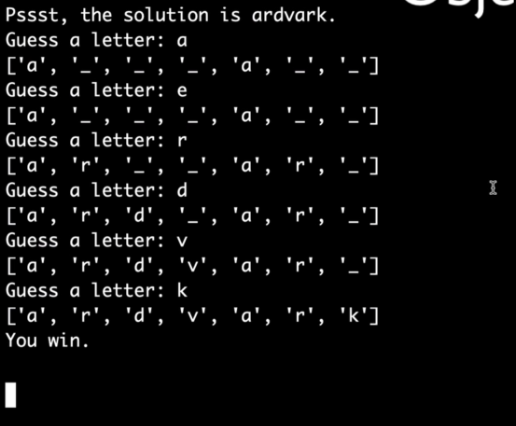
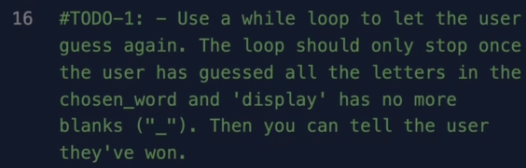

حتى الان اللعبة الخاصة بنا ليست ممتعة لان اللاعب يستطيع ان يحزر حرفا واحدا فنحن نريد منه ان يحزر كل حروف الكلمة حتى يكمل اللعبة
في هذه الحالة الحل هو الكلمة advark فسوف ابقى احزر في حروف الكلمة كلهم حتى تنتهي اللعبة والا فسوف ابقى احزر للابد ويخبرني في الاخير اني قد ربحت و اللعبة تنتهي وتخرج من الحلقة
لتحقيق ذلك لدينا مرحلة واحدة فقط في تحدي اليوم
والفكرة هنا ان تستعمل حلقة ال while لتجعل المستخدم يمكنه ان يحزر حرفا مرة واثنين وثلاثة والحلقة تنتهي في حالة ان اللاعب قام بحزر جميع الحروف في الكلمة وهذا يعني انه لايوجد فراغات ("_") في قائمة ال display وفي تلك الحالة يمكنك اخباره انه ربح اللعبة
مجددا اضغط هنا وهو نفس الموقع الذي اشير اليه سابقا واقرأ قليلا حول الحلقات وذكر نفسك بما تحتاجه لحل هذا التحدي و كمساعدة اقرأ حول الكلة المفتاحية in في بايثون واستعمالاتها و شيئ اخر وهو النفي في بايثون باستعمال ال not وكيف تعمل حلقة ال while و كيف تجعل جزء من الكود الخاص بك يعيد نفسه مرارا وتكرارا حتى يختل شرط ما و في هذه الحالة هذا الشرط هو انه لايوجد فراغات في قائمة ال display
لا تقلق حول معاقبة اللاعب لاجاباته الخاطئة سوف نفعل ذلك في التحديات القادئمة ركز فقط على اكمال تحدي اليوم
حظا موفقا